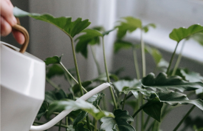

Find en plads
Undersøg dagslyset dér, hvor planten skal stå. Ingen planter trives i totalt mørke.
Se udstyr →Find en plads med dagslys, vælg en plante til forholdene, og lær at kontrollere dens vandbehov.
Se hvad du skal bruge
Undersøg dagslyset dér, hvor planten skal stå. Ingen planter trives i totalt mørke.
Se udstyr →Læs plantens mærkat, og vælg en plante, hvis lysbehov passer til pladsen.
Se udstyr →Tjek jordens fugtighed og plantens pasningsråd. Vand efter behov.
Se første planteprojekt →